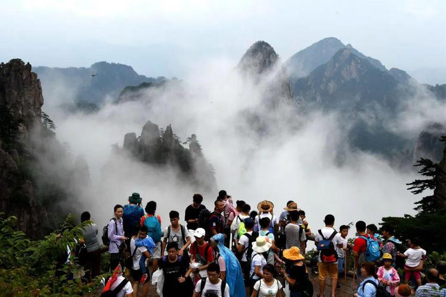

假期的黄山景区冷冷清清
作者：Echo&PP - 网易新闻
2022年5月2日
从安徽黄山到浙江莫干山、桐庐再到沿海的东极岛，今年的五一小长假，江浙沪及周边的旅游目的地再无往年人山人海的盛况。
空置的房间，安静寂寥的大山，不再忙碌的员工，对于长三角的旅游城市来说，这是一个寂寞的假期。
“不是下滑，是全军覆没”
往年四五月份，是莫干山旅游行业的小高峰。
山里的春天到了，周边大城市的游客纷纷趁着清明、五一两个假期出行、踏青，许多民宿都会组织客人们一起徒步、采茶、挖春笋，店里还会做青团、酿青梅酒，把这季节最美好的味道分享给客人。
谷老板从 2010 年起在莫干山经营 “后坞生活” 民宿，12 年里，她没有见过像今年一样寂寥的春天。
三月中旬，上海疫情状况日渐严重，封控措施一天比一天严格，杭州、苏州等周边城市也受到波及，进一步加强了防疫政策。原本应该一天比一天热闹的莫干山变得比冬日更加冷清，常常一天也没有一位客人。
“不是下滑，基本上可以说全军覆没。” 往年五一期间，谷老板民宿一间房的价格大约为 1500 元一晚，这也是莫干山大多数民宿的均价；但今年，这个数字跌到了 600 元左右。
这个假期，谷老板的民宿一共订出去了四间房，客人都来自莫干山所在的德清县。“他们已经付了钱，但大家都讲好了，一旦德清有了确诊病例，我这边的钱会全部退还给他们，所以到底能不能来也是一个未知数。”
“员工们还在努力地为客栈做宣传，但客人不是不想来，是都来不了。”
桐庐的情况与莫干山相似。小赵所在的桐庐原乡芦茨民宿开业于 2016 年，那时候这座浙江小城在大多数旅行者眼里还是一个小众目的地。2020 年末，桐庐成为中国唯一一个入选《国家地理》杂志 “2021 年 25 个全球最佳旅行目的地” 的旅游地。自此以后，每个节假日，原乡芦茨民宿都会满房，“平时的入住率也能达到六七成”。
而到了今年，民宿同期入住率只有去年的两成。小赵每天起床后都有些失落，原本现在应该是桐庐最有烟火气的时候，村里的居民和游客都忙着戏水、上山采春笋，民宿的公共空间常常挤得水泄不通。但如今的院子里只有两三只猫懒懒地睡着，民宿里安静得可以清晰地听到越来越响的虫鸣声。
“我们有自己的后山，每年都会去挖春笋和蕨菜。今年我们自己吃掉了特别多，因为没有客人来嘛。”
莫干山和桐庐的大部分民宿价格都不便宜，旺季一晚的价格在 1000 元以上，极大超出了当地人的消费水平。小赵提到，民宿有一群 “自己的客人”，他们大多数来自于上海、杭州两座大城市，乐于尝试新鲜事物，也更愿意在旅行这件事上花钱。
“上海的客人基本能占到八成，因为他们来桐庐也就两个半小时的路程。杭州周边的选择会多一些，比如安吉，但是对上海游客来说，桐庐是一个方便又很舒适的选择。”
同样受到影响的还有江浙一带的露营营地。去年开始，露营成为了时下最流行的生活方式之一，无数露营营地也如雨后春笋般在江浙沪一带发展起来。
小李在浙江台州一处营地工作，3 月底，一队自驾前来游玩的上海年轻人在到达的前一天突然打电话来取消订单。小李一问才知道，由于上海疫情形势突然变得严峻起来，这队客人担心之后无法顺利返沪，才决定取消订单。在那之后，“寒潮” 席卷了露营行业。
“我们的客流量至少减少了 80% 吧。露营这种生活方式面向的更多是上海这种大城市里的年轻人，像我们三线小城市的人，不太会玩这些的。”
这两个月里，偶尔有本地的游客会造访小李的露营营地。走的时候，他们对小李说：“这边氛围不太好，很冷清，没有那种大家一起露营的热闹了。”
为了省钱，小李收起了大部分的帐篷，也停了电，只有有客人来的时候会多支起来几顶帐篷，来烘托一些氛围。有天下雨，客人离开后，他赶去营地收帐篷，看到几顶孤零零的帐篷立在雨中，他觉得 “荒凉极了”。
“特别希望有人能来玩，不是为了赚钱，就是希望大家能在这里继续感受到快乐。”
游客消失了
在距离上海 400 公里以外的安徽黄山，导游查理也感受到了冲击。2020 年清明和五一期间，黄山每日能接待两万名游客，而最近，每天上山的客人仅有几十位。
从 2020 年 6 月开始，查理就在导游之外开发出了直播作为副业，但他仍然感受到，今年的情况比 2020 年要严峻得多。
从前，导游们对客人最常说的一句话是 “必须要早起”，如果想看日出，往往需要四点半就起床出发。排队更是司空见惯，摆渡车一般需要排一个小时，缆车需要一个半小时，参观每个景点（尤其是迎客松）也需要排着队龟速前进。在迎客松前拍照，极有可能拍下的是和陌生游客的合影。
去年做直播时，查理有时候需要凌晨两点半起床，三点半到达日出观景点，才能避开游客，占据一个好的位置开直播。饶是如此，他也经常为了抢位置和其他游客、导游发生摩擦。带团上山的导游晚上一般都会在导游房里休息，查理有时会被周围其他人的鼾声吵得睡不着觉，他便索性不睡了，穿上大衣，提前到山上去等待开播。
这样的情况在 2022 年不再发生。往常挤着 8 个人的导游房现在每天都由查理独享；如果六点日出，查理只需要五点五十到达观景点就可以顺利开播；直播日出时，主播的数量比在场的游客还多。
“一般我们有六个主播在直播，游客也就一两个，最好的一次有六个游客，整个观景台都是你的。”
为了直播效果，查理以前常常会特地避开人群，找一些没有太多游客的景点。现在的情况则正好相反，他想要找一两个游客作为直播的前景，却发现根本找不到。
作为导游，他从前很少在工作以外和山里的工作人员、路过的游客讲话，“因为工作的时候要一直说，休息的时候就很想躲”。最近如果在路上遇到游客和工作人员，查理都会十分热情地和他们打招呼、闲聊，“就像看到了宝贝一样”。
游客稀少，黄山和周边的旅游业也萧条了。山里的六家酒店，如今营业的只有三家，并且都削减了一半的员工。黄山南大门脚下的汤口镇，90% 的店铺都关闭了。
2019 年 7 月，拥挤的黄山
浩子做了十多年导游，从来没见过这样的黄山。从前山脚下的停车场里停满了来自外地的车，各地的牌照都有；镇上到晚上十点、十一点也一直灯火通明，热闹得很。如今他走在街上，四处都空荡荡的，晚上六七点就漆黑一片，“特别凄凉，一个人走在街上还有点害怕”。
在东极岛开海鲜餐厅的老丁也有类似的感受。岛上的居民休息得早，从前只有为游客服务的民宿、餐厅才会在晚上营业，一条路上有几盏亮着的灯。现在由于没什么游客前来游玩，岛上又恢复了从前的作息，晚上八九点，海面和小岛都一片漆黑。
老丁的朋友在岛上经营着一间民宿，平时的周末一般都能满房。上海封控开始后，两天之内，民宿里订出去的所有房间都被退掉了。“很多客人都是上海的大学生，愿意周末来玩，（东极岛）既不远也不贵。现在他们别说出上海了，连学校都出不了了。”
失去游客后，老丁和大多数东极岛的居民都回到从前的生活节奏：每天钓钓鱼，出海捕捞一点海鲜，再回家给自己和家人认真做一顿晚饭。
“我的摊子临海，以前客人多的时候，每天只能对着炒菜炒饭的那口锅，一天下来身上都是油烟味。现在有了更多的时间看看海，刷刷抖音。来岛上的客人一少，可以安安静静看看大海的时间就变久了。”
“一两年内，不可能恢复了”
对于旅游行业的人来说，没有游客意味着收入锐减。
浩子最后一次以导游的身份带游客上山是在去年 11 月。那时黄山秋色正浓，虽然游客数量比不上春夏的高峰期，但一路上还是能看到不少人。接着黄山进入了旅游淡季，浩子像往年一样，等待三月的到来。
吉林和上海的疫情打破了浩子的希望，他并没有在三月接到任何一波客人，仅仅依靠贩卖家乡特产换取一些收入。每天早上醒来，浩子想到每月 5000 多元的房贷，觉得身上的担子无比沉重。
比起看不到尽头的等待，浩子选择了改变：喜爱美食的他选择了开一家面馆。面馆距离黄山北大门还有 30 分钟的车程，每天接待的客人基本都是本地人，从前每天和游客打交道的浩子已经好几个月没见过一个游客了。
查理的危机感来得更早一些。2020 年疫情爆发初期，他就意识到导游行业收入的不稳定性。为了谋求生计，查理最初选择了去杭州做房产中介。不过一星期以后他就意识到自己并不适合这一行。“我那个时候 43 岁，外面大部分公司都不要我了。房产中介的市场竞争压力特别大，我完全没经验，短期内是挣不到钱的，就决定还是回黄山来搞旅游吧。”
直播是查理选择的转型之路。他清晰地记得，自己第一次直播时，直播间里最多只有 8 人观看。在那之后，查理咬牙把自己的手机换成了苹果，又贷款购买了云台等直播设备，极大地提升了画质。
起初，直播并不能给查理带来太多收入。最穷的时候，查理每天靠吃压缩饼干度日，直播结束后还会拉一单顺风车的客人回家赚点外快。一直到 2020 年年末，有几批客人通过直播找到查理来做导游，他窘迫的经济状况才稍稍缓解。
在黄山旅游凋敝的此刻，“转行” 已经成为了必然的选择。3 月，黄山导游协会发布一则通知，招募导游去做采茶工，每天支付 170 元的工资。浩子有朋友报名参加了招募，在短暂的茶季里，他们需要每天 5:30 起床，6:00 上山，中午采茶结束，下午开始在家里做茶，一直到晚上十点。
“这比导游辛苦太多了，导游一般早上 6:00 出发，下午 3:00 就结束了。” 浩子提到，还有一些人选择了去工厂里上班，“做一些零部件的组装或者包装，很杂”。
没有客人来民宿的日子里，谷老板的员工有天小心翼翼地向她提议放一个月的假，等到六月一切恢复了再回来上班。
“他们说现在这样上班，照常付工资，我的损失太大了。但我说坚决不行的，因为一放假，大家的收入就减少了，这样不行的。”
为了减少损失，谷老板和员工每天都努力地挖笋、晒笋干、开发菜地，希望可以多卖一些土特产给来不了民宿的客人。“但是现在很多地方快递停了，就算客人想买，快递也发不到他们家里。”
谈到旅游业未来的恢复情况，大家都变得谨慎。查理坦诚地告诉我，他认为黄山的旅游业，在未来的一两年内，都不可能恢复到疫情前的水平了。谷老板则说：“不要有期待，期待了又没有转机，大家只会越来越崩溃。”
“只希望早日恢复吧。” 我和每一位采访对象的对话，都以这句话结束。